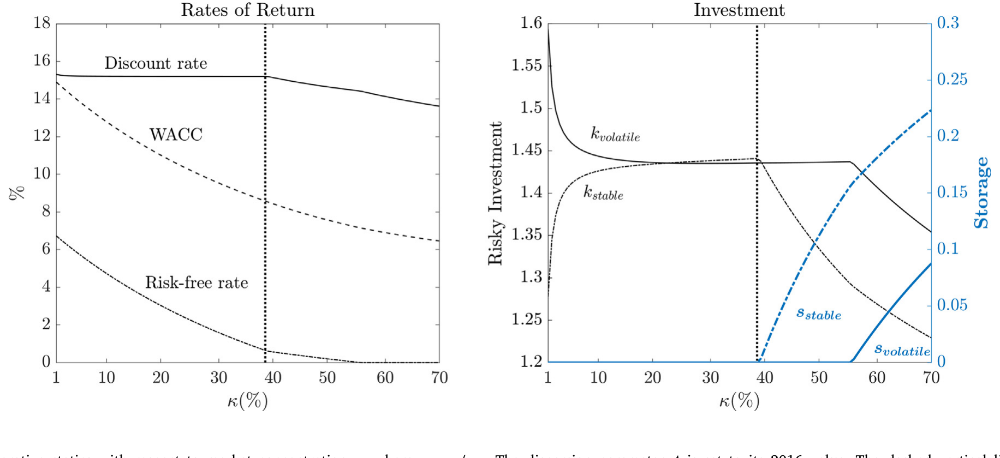
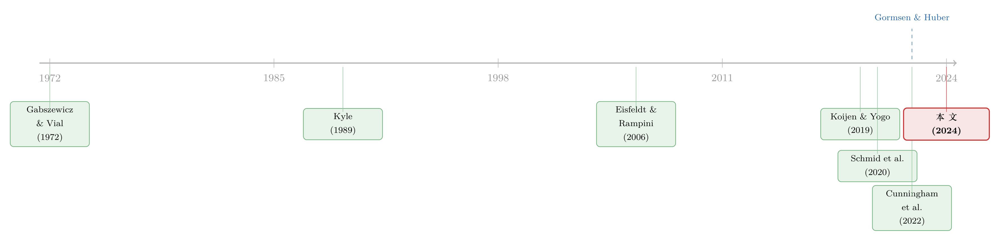

市场太「集中」，资本就会配错地方——一个关于价格冲击与错配的一般均衡故事
本文读的是 Neuhann & Sockin (2024, Journal of Financial Economics)：当少数大机构和大公司主导金融市场时，它们的「价格冲击」会同时阻碍风险分担和资本再配置，于是高生产率公司投资不足、低生产率公司投资过度——这就是资本错配。更妙的是，错配又会反过来放大价格冲击，形成一个双向反馈环。即便市场集中度本身基本稳定，只要生产率离散度上升，这套机制就能解释过去二十年「低利率、弱投资、高现金、高贴现率」这一串看似矛盾的事实。
1 一个让人想不通的事实
先抛一个谜题。
进入 2000 年代以后，美国的无风险利率一路走低，融资成本也跟着下行——按教科书的逻辑，钱便宜了，公司理应大干快上，投资该热才对。可现实恰恰相反：企业投资相对趋势线持续疲软（Fernald et al., 2017；Gutiérrez and Philippon, 2017b；Alexander and Eberly, 2018 都记录了这一点）。不仅不投资，大公司还反过来当起了「债主」，疯狂囤积金融资产——公司债、现金，越攒越多，这就是常被人提起的「企业储蓄过剩 (corporate savings glut)」。
到底夸张到什么程度？论文开篇举的例子很扎眼：2018 年《华尔街日报》报道，苹果的全资子公司 Braeburn Capital 管理着 2440 亿美元 金融资产，相当于苹果总账面资产的 70%，其中 1530 亿美元 砸在公司债上——文章直言「苹果像一只对冲基金，还用 1150 亿美元 的债务给这个组合加杠杆」。苹果并不孤独，大型非金融企业如今普遍是净放贷者，而非净借款者（Chen et al., 2017）。
于是问题来了：钱这么便宜，profitable 的机会要是真有，为什么没人去投？
流行的答案是「好机会变少了」。但这个解释有点偷懒——到底是哪一项结构性变化，凭空制造出了这种「机会稀缺」？不同的答案，对应着完全不同的政策含义。Neuhann 和 Sockin 给了一个相当不一样的回答。
2 把镜头对准金融市场，而不是产品市场
他们的切入点是一个容易被忽视的事实：很多金融市场，本身就越来越「集中」了。
这里说的不是产品市场的垄断（那条线索 Jones and Philippon, 2016；Gutiérrez and Philippon, 2017a 等已经讲过很多），而是金融市场里资金被极少数大玩家把持。看几个数字：Corbae and Levine (2018) 指出 2015 年美国最大的五家银行握有全美银行总资产的 47%；OCC 估计利率互换名义金额的 90% 以上由四家银行包办，CDS 市场的 95% 以上由三家银行包办；在公司债市场，Li and Yu (2022) 发现一只中位数的投资级债券仅由 47 个投资者持有；Ben-David et al. (2021) 则显示 2016 年最大的单一机构投资者掌管了全美股票资产的 6.3%，前十大合计 26.5%。
关键的转折就在这里。市场集中意味着什么？意味着大玩家下单会动价格。这正是 Kyle (1989) 那个经典权衡：价格冲击 (price impact) 会吓退交易，从而留下「未实现的交易收益 (unrealized gains from trade)」。而 Koijen and Yogo (2019)、Bretscher et al. (2022) 的实证又恰好告诉我们，大投资者在股票和债券市场上的价格冲击不仅高，而且持续——也就是说，这件事对资本的再配置是真实相关的。
接着，一个自然的问题是：以往研究价格冲击的文献，大多停在「价格冲击扭曲资产价格和流动性」这一层，而且默认资产的现金流分布（也就是交易需求）是外生给定的。可如果公司能用金融市场来管理风险、再配置资本，那么现金流的分布本身就是内生的——它会和价格冲击在一般均衡里同时被决定。
这就是本文最核心的一步：把实物投资决策放进一个有价格冲击的一般均衡模型里，让现金流的水平、风险和横截面分布，与价格冲击一起被内生地决定出来。
3 模型：一个只有「一种摩擦」的世界
为了把机制讲透，作者把模型剥得很干净——唯一的摩擦就是金融市场的不完全竞争。除此之外市场是完全的、信息是对称的、没有代理问题。
设定如下。只有一种商品（计价物），两个日期 \(t=1,2\)。日期 2 的世界状态 \(z\) 事先未知，状态集为 \(\{1,2,\dots,Z\}\)，状态 \(z\) 发生的概率是 \(\pi(z)\)。
世界里有两类人。第一类是策略型交易者 (strategic agents)，他们体量大、会把自己交易对价格的影响内化进决策——代表大公司或大型金融机构。共有 \(N\) 个类型，\(i\in\{1,\dots,N\}\)，类型决定了能用的生产技术。每个类型有 \(1/\mu\) 个交易者，每个的质量为 \(\mu\in(0,1]\)。所以策略型交易者总数是 \(N/\mu\)，总质量是 \(N\)。
这里的 \(\mu\) 是全文的灵魂参数：它度量相对规模 / 市场集中度 (market concentration)。在其他参数不变的前提下，
$$\lim_{\mu \to 0} \;\Rightarrow\; \text{perfect competition.}$$
也就是说，\(\mu\to 0\) 时每个玩家都变成原子般渺小，模型回退到完全竞争的基准。用 \(\mu\) 调集中度而不改变总的生产可能性边界，这个设计很巧。
类型 \(i\) 的策略型交易者 \(j\)，在日期 1 拿到禀赋 \(\mu e\)，并有一项专属生产技术：把 \(\mu k_{j,i}\) 单位计价物投进去，在状态 \(z\) 下产出 \(\mu y_i(z) k_{j,i}\) 单位。他还可以把钱存进无风险储蓄（现金）：\(\mu s_{j,i}\ge 0\) 变成 \(\mu R s_{j,i}\)，且对所有 \(i\) 有 \(E[y_i(z)]>R\)——现金平均回报更低，是个「安全但不划算」的去处。
第二类是竞争性边缘 (competitive fringe)，质量为 \(m_f\) 的一群价格接受者（家庭和散户），没有生产技术，偏好对日期 1 线性、对日期 2 风险厌恶。他们的存在是用来「中介」策略型交易者之间博弈的——大玩家通过改变 fringe 的边际效用来影响价格。
可交易的资产是完备的一组 Arrow 证券 (Arrow securities)：共 \(|Z|\) 只，证券 \(z\) 在状态 \(z\) 支付一单位、其余为零。
把策略型交易者的决策问题写出来（这是后面所有直觉的源头）：
$$U_{j,i}=\max_{\sigma_{j,i}}\; u(c_{1,j,i})+\sum_{z\in\mathcal{Z}}\pi(z)\,u\big(c_{2,j,i}(z)\big)$$
$$\text{s.t.}\quad \mu c_{1,j,i}=\mu e-\mu k_{j,i}-\mu s_{j,i}-\mu\sum_{z\in\mathcal{Z}}\tilde{Q}_{i,j}(\mathbf{A},z)\,a_{j,i}(z),$$
$$\mu c_{2,j,i}(z)=\mu y_i(z)\,k_{j,i}+\mu a_{j,i}(z)+\mu R s_{j,i}.$$
注意那个 \(\tilde{Q}_{i,j}(\mathbf{A},z)\)——它是交易者 \(j\) 感知到的定价函数，是总持仓 \(\mathbf{A}\) 的函数。价格随我的下单而动，这就是价格冲击。日期 1 的财富要在三处分配：自己的实物投资、现金储蓄、买卖证券。把这条预算约束摊开看：
竞争性边缘则简单得多，它把价格当常数 \(\tilde q(z)\)，求解
$$U_f=\max_{\sigma_f}\; c_{1f}+\sum_z \pi(z)\,u_f\big(c_{2,f}(z)\big),\quad c_{1f}=e_f-\sum_z \tilde q_f(z)\,a_f(z),\;\; c_{2,f}(z)=e_{2,f}(z)+a_f(z).$$
市场出清要求每个状态的证券净需求为零：
$$A(z)+m_f\,a_f(z)=0\quad\text{for all }z.$$
均衡概念是 Gabszewicz and Vial (1972) 传统下的 Cournot–Walras 均衡：策略型交易者在「把别人的持仓和 fringe 的剩余需求曲线当给定」的前提下，提交价格依存的订单。
为什么不用更主流的 Kyle (1989) 式「需求函数」均衡（Rostek and Yoon, 2020 的综述）？因为后者为了可解，通常得套上很强的偏好假设（典型的 CARA-正态）。而本文要的恰恰是丰富的异质性、非对称均衡、以及非线性的剩余需求——这些都是「投资—价格冲击」反馈机制的命脉。Cournot–Walras 牺牲了一点策略互动的细腻，换来了这份可解性。作者还证明了一个漂亮的结论：均衡对所交易的具体资产集合是不变的，引入股票、债券这类冗余证券不会改变任何东西——所以「只交易 Arrow 证券」是 without loss of generality。
4 真正关键的一步：价格冲击如何制造错配
模型搭好了，那核心机制到底怎么运转？这是全文最该讲透的一点。
定价函数从哪来？从 fringe 的一阶条件来。因为 fringe 是价格接受者，组合最优要求资产价格等于 fringe 的边际效用。于是当某个大玩家增加需求时，他买走了 fringe 手里的证券、压低了 fringe 在那个状态下的消费，从而抬高了 fringe 的边际效用，也就抬高了价格和价格冲击。这是一条干净的、内生的价格冲击。
然后，本文最漂亮的洞见出现了：价格冲击对投资的影响，在生产率分布上是「分裂」的。
- 高生产率公司是金融市场上的净借款者。它们想从别人那里融资来投自己的好项目。可价格冲击让借款（卖证券）变贵、还削弱了风险管理——于是它们投得比完全竞争下更少。
- 低生产率公司是净资金供给者。它们本该把钱借给更高产的同行。可价格冲击让放贷（买证券）也变得不划算——于是它们干脆把钱投进自己那些平庸的项目，投得比完全竞争下更多。
一边投资不足，一边投资过度，资本没有流向边际产出最高的地方——这就是资本错配 (capital misallocation)。而且因为价格冲击同时妨碍了风险分担，风险型投资最终会下降，公司转而靠低效的现金囤积来自保。
但真正让这篇论文与众不同的，是反馈的「回程」：错配又反过来放大价格冲击。 逻辑是这样的：低效投资压低了公司未来的产出增长，迫使它们向 fringe 多买/少卖资产，这压低了 fringe 的消费；若 fringe 的边际效用是凸的，价格冲击就会进一步上升。于是——
$$\text{price impact}\;\longrightarrow\;\text{misallocation}\;\longrightarrow\;\text{price impact}\;\longrightarrow\;\cdots$$
一个自我放大的反馈环。这个环的放大倍数，最终由两个基本面决定：市场集中度 \(\mu\)，以及生产率的横截面分布。作者由此得到第一个核心结论——并且证明：当投资机会越分散（离散度越高），市场势力造成的扭曲越严重。
（关于「需求侧的力量如何拧歪资本配置」这一主题，本博客另有两篇可对照阅读：《钱追着「人气」跑：投资者需求如何悄悄拧歪了资本配置》 和 《投资于「错配」》。本文的特别之处在于，错配是大玩家「自愿」选择的策略性结果，而非信息或代理摩擦的副产品。）
5 三个结果，与一个反直觉的推论
顺着这个机制，论文给出三个主结果。
其一，就是上面那个「价格冲击 ↔ 错配」的双向反馈环。
其二，关于一般均衡里「现金流风险分布」与总量经济的关系。第二个核心结论是：金融市场的扭曲对「市场参与者之间的基本面交易收益」的变化非常敏感——哪怕这种冲击在竞争性市场里本应是中性的。举个例子：对可分散投资风险做一次均值保持的扩散 (mean-preserving spread)，会推高价格冲击，从而让风险型投资下降得更多。换句话说，潜在的交易收益增加了，已实现的交易收益反而减少了。由于生产率离散度随时间上升（Cunningham et al., 2022），这意味着即便市场集中度没有任何直接变化，市场势力造成的扭曲也会长期攀升。又因为离散度是逆周期的，模型还顺带预测：流动性顺周期、再配置逆周期——前者与 NÆs et al. (2011) 的股票市场证据、Bao et al. (2011) 与 Kargar et al. (2021) 的债券市场证据一致，后者则呼应 Eisfeldt and Rampini (2006)。
其三，资产定价含义。作者给出条件，使得当市场变得集中时：所有资产价格上涨、无风险利率下降、而市场风险溢价依旧很低。注意——「低投资 + 低资本成本」通常被当成一个谜，但在这个模型里它们是同一个扭曲的联合产物，而非两件待解释的怪事。
这里有一个特别值得玩味、也相当反直觉的推论：
市场势力的变化，可能用流动性的简约指标（如价格弹性）根本测不出来。原因是，这些指标同时也反映了风险的数量与分布的变化。当集中度低时，集中度冲击主要在公司间再配置投资，体现为资产价格上涨；当集中度变高后，公司越来越多地用现金自保，价格的进一步调整主要由风险数量的变化驱动。两股力量混在一起，让你很难单从弹性里读出市场势力。
这组比较静态的形态，作者画在了图 1 里：横轴是市场集中度 \(\mu\)（图中 \(\kappa=\mu/m_f\)），离散度参数 \(\Delta\) 固定在 2016 年的值，可以看到投资、现金、价格等随集中度变化的非线性路径。

Figure 1: Comparative statics with respect to market concentration 𝜇, where 𝜅=𝜇∕𝑚 𝑓. The dispersion parameter 𝛥 is set to its 2016 value. The dashed v
6 把模型对准 2002–2016
理论再漂亮，也得回答「它能不能对上现实」。这里作者用了一个很聪明的实证锚点。
Gormsen and Huber (2022) 记录了一个 striking 的事实：这段时期里，公司报告的贴现率（或门槛收益率 hurdle rate）与它们自己估计的、金融市场上的加权平均资本成本 (weighted average cost of capital, WACC) 之间，出现了一道很大的楔子——无风险利率和资本成本急剧下降，可贴现率却居高不下、纹丝不动。
这正是本文模型的天然预测：在有价格冲击的世界里，私人估值与市场估值本就不会对齐，于是门槛收益率与资本成本之间必然出现一道楔子。
关于这道「门槛收益率为什么降不下来」的楔子，本博客评述过一篇直接相关的论文：《把「门槛」抬高，是为了在谈判桌上赢回来——重新理解企业为何固守过高的内部收益率》。两者从不同的机制（议价能力 vs. 价格冲击）解释了同一个经验现象，可以对照着读。
作者把模型校准到 2002 年，然后做一件干净的事：把 Cunningham et al. (2022) 测出的生产率离散度的外生上升直接喂进模型。结果是——这一个变化，就能解释 2002 到 2016 年间三种收益率（无风险利率、资本成本、贴现率）时间变化的大部分，同时伴随疲软的实物投资。若再叠加一点点市场集中度的上升（与 Kwon et al., 2023 的数据一致），对资本成本的拟合更好，并能预测出投资下降、现金囤积上升——全都与数据吻合。
这恰好把全文的灵魂结论又敲了一遍：金融市场势力造成的扭曲，紧紧绑定在投资机会的横截面分布上。 集中度可以基本不动，只要离散度在涨，扭曲就在恶化。
（顺带一提，「企业为什么主动持有风险金融资产、当起债主」这条线，本博客评过 《把风险揣进兜里》；而「公司储蓄过剩与自由现金流」的老话题，可参见 《现金为什么一定要「还」出去？》。)
7 文献脉络
把这条研究线索捋一捋，会看到它站在好几股传统的交汇处。
最上游是两块基石。一块是 Kyle (1989) 奠定的价格冲击框架——大玩家下单会动价、从而吓退交易；另一块是 Gabszewicz and Vial (1972) 的 Cournot–Walras 均衡，给「策略型交易者 + 竞争性边缘」这套结构提供了均衡概念。沿着 Kyle 这条线，后来有 Malamud and Rostek (2017) 讨论价格冲击如何在给定证券禀赋下妨碍风险分担，以及 Rostek and Yoon (2020) 对需求函数均衡的综述。
接着是资本错配这条线。Eisfeldt and Rampini (2006) 给出「错配逆周期、再配置顺周期」的证据；Carlstrom and Fuerst (1997)、Ai et al. (2020) 把错配与代理摩擦挂钩，Kurlat (2013)、Bigio (2015) 则归因于二级市场上关于资本质量的不对称信息。Schmid et al. (2020) 更进一步，说明生产率异质性会带来公司特定风险溢价的异质，从而解释边际资本产出的离散。
然后，是把大投资者搬上舞台的需求体系文献：Koijen and Yogo (2019)、Haddad et al. (2021)、Bretscher et al. (2022)——它们用需求体系估计大玩家的价格冲击，但通常维持价格接受假设、且忽略对实物投资的反馈。

而本文所处的位置，恰恰是把这几股线拧到了一起：在一个有价格冲击的一般均衡里内生地决定投资与现金流分布，给出「价格冲击 ↔ 错配」的双向反馈，并用 Cunningham et al. (2022) 的离散度、Gormsen and Huber (2022) 的贴现率楔子，把一套抽象机制对准了过去二十年的真实数据。
8 评论与延伸（Q&A + 研究方向）
(a) 几个可能的疑问
Q：这跟产品市场的垄断有什么区别？产品市场集中不也压低投资、压低利率吗？
区别很关键。产品市场集中（Jones and Philippon, 2016 等）通常通过顺周期的加成（markup）起作用，往往会抬高生产率和风险溢价；而本文的渠道是金融市场里的策略性证券配给，它直接妨碍风险分担与资本再配置，机制和可观测含义都不同。作者特意「关掉」了产品市场竞争，就是为了把金融市场势力这条渠道单独拎出来。
Q：为什么大公司会被假设成「风险厌恶」？它们不是应该按 NPV 中性地决策吗？
作者用同质偏好下的风险厌恶来捕捉「即便是大公司也会规避风险」这件事——可能源于管理层风险厌恶（Papanikolaou and Panousi, 2012）、平滑现金流的需求、或大股东的欠分散（Greenwald and Stiglitz, 1990）。重要的是，同质（homothetic）偏好让规模 \(\mu\) 纯粹通过均衡互动影响投资，而不是直接改变偏好——这保证了「集中度」效应的干净。
Q：「价格冲击导致错配」这个结论，会不会只是 Kyle 模型里早就有的东西换了层皮？
不是。Kyle 式文献里，「价格冲击留下未实现交易收益」是已知的；本文的新意在于现金流分布是内生的：投资决策被放进来后，现金流的水平、风险和横截面分布与价格冲击在一般均衡里同时被决定，于是才有了「错配反过来放大价格冲击」这个回程——这是外生禀赋模型里根本不存在的。
Q：集中度基本稳定，凭什么说扭曲在恶化？
因为扭曲取决于两个基本面——集中度和离散度。本文第二个结果证明，离散度（均值保持的扩散）上升本身就会推高价格冲击。所以即便 \(\mu\) 不动，只要 Cunningham et al. (2022) 记录的生产率离散度在涨，扭曲就在悄悄加重。这也是它能解释「集中度稳定、投资却疲软」的关键。
Q：那道「贴现率 vs. 资本成本」的楔子，会不会有别的解释？
会，至少 Gormsen and Huber (2022) 本身、以及议价能力视角（见上文交叉引用的 hurdle-rate 那篇）都能产生楔子。本文的贡献不是声称自己是唯一解释，而是说明：在价格冲击下，私人估值与市场估值天然不对齐，楔子是模型的内生预测，且能与离散度趋势定量对上。
Q：完全市场 + 对称信息，这套假设是不是太理想化了？
这恰恰是作者刻意的「极简」策略：把信息不对称、市场不完备、代理问题统统关掉，只留金融市场不完全竞争这一种摩擦，从而证明「错配并不需要信息或代理摩擦，光靠市场势力就能内生出来」。代价是它对真实市场微观结构（搜寻、分割、做市）的刻画很薄——这是它的边界，不是它的目标。
(b) 几个可能的研究问题与提案
-
把机制搬到公司债市场做直接检验。 【经济故事】本文预测：当一只债券的持有人越集中、价格冲击越高，发行人的投资—融资行为越会被扭曲（高产者借得少、囤现金）。Li and Yu (2022) 已经说明中位投资级债券只有约
47个持有人——持有人集中度有天然的横截面变异。 【可行性】中。需要把 eMAXX/Mergent FISD 的债券持有人数据与 Compustat 投资数据匹配，用持有人集中度（或 Koijen–Yogo 式价格冲击估计）作为右手边变量。识别上的难点是持有人集中度的内生性——可考虑用指数纳入、评级断点等外生冲击做工具。 -
离散度冲击 → 流动性的逆周期检验。 【经济故事】模型预测离散度逆周期、因而流动性顺周期、再配置逆周期。这给了一个可证伪的总量含义。 【可行性】高。用 Cunningham et al. (2022) 式的生产率离散度时间序列，对 Bao et al. (2011)/Kargar et al. (2021) 的债券流动性指标做时序回归，控制宏观周期，看离散度是否在集中度之外额外预测流动性。数据都现成。
-
外资持有人是「集中度」的放大器还是稀释器？ 【经济故事】外国机构常以大体量进出某国信用市场，既可能加剧持有人集中、放大价格冲击，也可能因偏好不同而提供额外的风险分担。本文框架给了一个判断两种力量净效应的结构。 【可行性】中。需要分国别的债券持有人数据（如 ECB SHS、TIC）。识别可借助资本流动管制变化或指数纳入带来的外资份额跳变。与我自己关注的「外资公司债持有人与流动性」方向高度契合。
-
用「价格弹性测不出市场势力」这个反直觉推论做一篇方法论文章。 【经济故事】本文警告：简约的价格弹性会把市场势力和风险数量混在一起。如果属实，许多用弹性度量流动性/势力的实证可能存在系统性偏误。 【可行性】中偏低。需要一个能同时识别「风险数量变化」与「势力变化」的结构估计，门槛较高，但理论指引清晰，是一块有价值的硬骨头。
-
把现金囤积当作「价格冲击」的代理变量。 【经济故事】模型里，当价格冲击足够高，公司从「再配置」转向「现金自保」。那么公司现金/风险资产比例的横截面，应当与其面对的金融市场价格冲击系统相关。 【可行性】高。Compustat 现金持有 + 行业层面的持有人集中度即可起步，与本文校准（叠加 Kwon et al., 2023 的集中度数据）能形成对照。
9 我的判断
这篇论文的贡献，我认为主要在于机制的纯粹性。它用一个只有「金融市场不完全竞争」这一种摩擦的完全市场模型，证明了资本错配可以纯粹作为大玩家的策略性选择内生出来，不需要信息不对称、也不需要代理问题；更进一步，它给出了「价格冲击 ↔ 错配」的双向反馈，并漂亮地把扭曲的强度与「市场集中度 + 生产率离散度」这两个基本面挂钩。把这套机制对准 Gormsen–Huber 的贴现率楔子和 Cunningham 等人的离散度趋势，使它从一个理论玩具变成了一个能解释过去二十年的「低利率—弱投资—高现金」联合谜题的候选框架。「集中度可以不动、扭曲照样恶化」这个推论，尤其有政策分量。
担忧也有两点，都关于与数据的对接。其一，这是一个两期、完全市场、对称信息的极简模型，校准更接近「定性能不能对上」而非严格的结构估计——作者自己也坦言把完整的定量评估留给了 future work，所以「能解释大部分时间变化」这类表述要读得克制。其二，全文的实证身份高度依赖外部数据（离散度、集中度、贴现率楔子）的因果解读；离散度上升与投资疲软之间，到底是本文的价格冲击渠道，还是别的结构性变化，模型本身无法排他地识别——它提供的是一个自洽的解释，而非一个排他的证据。
后续我最想看到的，是把这套机制拉到单一市场的微观数据上做一次真刀真枪的检验：用债券或股票的持有人集中度作为价格冲击的代理，看「高产者投资不足、低产者投资过度、现金随集中度上升」这组横截面预测，是否真的在数据里成立。那将是从「能讲通」走向「确实如此」的一步。
参考文献
- Bao, J., Pan, J., Wang, J. (2011). The illiquidity of corporate bonds. Journal of Finance 66(3), 911–946.
- Bretscher, L., Schmid, L., Sen, I., Sharma, V. (2022). Institutional corporate bond pricing. Working Paper.
- Corbae, D., Levine, R. (2018). Competition, stability, and efficiency in financial markets. Working Paper.
- Cunningham, C., Foster, L., Grim, C., Haltiwanger, J., Pabilonia, S.W., Stewart, J., Wolf, Z. (2022). Dispersion in dispersion: Measuring establishment-level differences in productivity. Working Paper.
- Eisfeldt, A.L., Rampini, A.A. (2006). Capital reallocation and liquidity. Journal of Monetary Economics 53(3), 369–399.
- Gabszewicz, J.J., Vial, J.-P. (1972). Oligopoly "à la Cournot" in a general equilibrium analysis. Journal of Economic Theory 4(3), 381–400.
- Gormsen, N.J., Huber, K. (2022). Corporate discount rates. Working Paper.
- Greenwald, B., Stiglitz, J.E. (1990). Asymmetric information and the new theory of the firm: Financial constraints and risk behavior. American Economic Review 80(2), 160–165.
- Haddad, V., Huebner, P., Loualiche, E. (2021). How competitive is the stock market? Working Paper.
- Koijen, R.S.J., Yogo, M. (2019). A demand system approach to asset pricing. Journal of Political Economy 127(4), 1475–1515.
- Kwon, S.Y., Ma, Y., Zimmermann, K. (2023). 100 years of rising corporate concentration. Working Paper.
- Kyle, A.S. (1989). Informed speculation with imperfect competition. Review of Economic Studies 56(3), 317–355.
- Li, J., Yu, J. (2022). Investor concentration and bond liquidity. Working Paper.
- Malamud, S., Rostek, M. (2017). Decentralized exchange. American Economic Review 107(11), 3320–3362.
- NÆs, R., Skjeltorp, J.A., Ødegaard, B.A. (2011). Stock market liquidity and the business cycle. Journal of Finance 66(1), 139–176.
- Neuhann, D., Sockin, M. (2024). Financial market concentration and misallocation. Journal of Financial Economics 159, 103875.
- Papanikolaou, D., Panousi, V. (2012). Investment, idiosyncratic risk, and ownership. Journal of Finance 67(3), 1113–1148.
- Rostek, M., Yoon, J.H. (2020). Exchange design and efficiency. Working Paper.
- Schmid, L., David, J., Zeke, D. (2020). Risk-adjusted capital allocation and misallocation. Journal of Financial Economics.